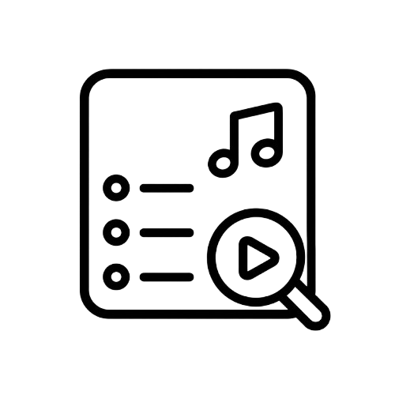

Redução do estresse
A escuta atenta pode ajudar a reduzir a tensão e favorecer uma sensação de calma.
Sons que acolhem, playlists que transformam. Descubra como a música pode equilibrar suas emoções e trazer mais leveza para os seus dias.
A musicoterapia é uma prática da área da saúde que utiliza a música e seus elementos — som, ritmo e melodia — como ferramentas terapêuticas.
Ela pode apoiar a expressão emocional, a comunicação, o relaxamento e diferentes processos de desenvolvimento.
Saiba mais sobre a práticaA música pode acompanhar diferentes necessidades e momentos da sua rotina.
A escuta atenta pode ajudar a reduzir a tensão e favorecer uma sensação de calma.
A música pode influenciar positivamente o humor e acolher emoções difíceis.
Ritmo e melodia podem estimular memória, atenção e outras funções cognitivas
Quatro passos para encontrar uma trilha que combine com o seu momento.
Foco, relaxamento, sono, emoções ou meditação.

Veja músicas selecionadas para o seu momento.
Reserve alguns minutos para se conectar com o som.
Observe suas emoções antes e depois da escuta.
Conheça as perguntas mais frequentes sobre o projeto, as playlists e a musicoterapia.
Acessar o FAQ